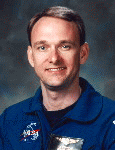

Lyndon B. Johnson Space Center
Houston, Texas 77058
|
National Aeronautics and Space Administration Lyndon B. Johnson Space Center Houston, Texas 77058 |
 |
Biographical Data |
||
Joe Frank Edwards, Jr., (Commander, USN, Ret.)
NASA Astronaut (former)
PERSONAL DATA: Born February 3, 1958, in Richmond, Virginia. Considers Lineville, Alabama, and Roanoke, Alabama, to be his hometowns. Married to the former Janet Leigh Ragan of Leonardtown, Maryland. He enjoys basketball, running, football and softball. His parents, Joe Frank and Jane McMurray Edwards, reside in Roanoke, Alabama.
EDUCATION: Graduated from Lineville High School, Lineville, Alabama, in 1976. Bachelor of Science degree in Aerospace Engineering from the United States Naval Academy, 1980. Master of Science degree in Aviation Systems from University of Tennessee, Knoxville, 1994.
ORGANIZATIONS: Society of Experimental Test Pilots, Association of Naval Aviation, U.S. Naval Institute.
SPECIAL HONORS: Distinguished Flying Cross, Defense Superior Service Medal, Air Medal, Defense Meritorious Service Medal, Navy Commendation Medal, Navy Achievement Medal. Daedalian Superior Airmanship Award 1992, Fighter Squadron 143 Fighter Pilot of the Year, 1984, 1985, Fighter Squadron 142 Fighter Pilot of the Year, 1990, 1991, 1992. Carrier Airwing Seven Pilot of the Year, 1985, 1990, 1991.
EXPERIENCE: Designated a Naval Aviator in February 1982. Assigned to Fighter Squadron 143 in 1983 after completion of F-14 Tomcat training. Flew fighter escort and reconnaissance combat missions over Lebanon in 1983 and graduated from U.S. Navy Fighter Weapons School in 1984. Graduated from U.S. Naval Test Pilot School in 1986 and subsequently worked as project flight test officer and pilot for F-14A(PLUS) and F-14D Full Scale Development. Flew the first Navy flight of the F-14D and a high angle of attack/departure from controlled flight test program for the F-14 airframe/F110 engine integration. Served as Operations and Maintenance Officer in Fighter Squadron 142 1989-1992. Worked as Operations Officer in the Operations Directorate of the Joint Chiefs of Staff, Washington D.C. from 1992-1994. He has flown 4000 hours in over 25 different aircraft and logged over 650 carrier-arrested landings.
NASA EXPERIENCE: Selected as an astronaut by NASA in December 1994, Edwards reported to the Johnson Space Center in March 1995. He has worked technical issues for the Space Shuttle and Space Station in the Safety Department of the Astronaut Office. He also served as Technical Assistant to the Director, Flight Crew Operations Directorate, NASA Director of Operations (DOR), Russia, and Astronaut CAPCOM representative in Mission Control for Shuttle ascent and entry. Edwards retired from NASA and the U.S. Navy on April 30, 2000. He is currently involved with several companies around the country in the areas of technology, aviation, and business development
SPACE FLIGHT EXPERIENCE: STS-89 (January 22-31, 1998) was the eighth Shuttle-Mir docking mission during which the crew transferred more than 9,000 pounds of scientific equipment, logistical hardware and water from Space Shuttle Endeavour to Mir. In the fifth and last exchange of a U.S. astronaut, STS-89 delivered Andy Thomas to Mir and returned with David Wolf. Mission duration was 8 days, 19 hours and 47 seconds, traveling 3.6 million miles in 138 orbits of the Earth.
MAY 2002
This is the only version available from NASA. Updates must be sought from the above named individual.
{kind=link}